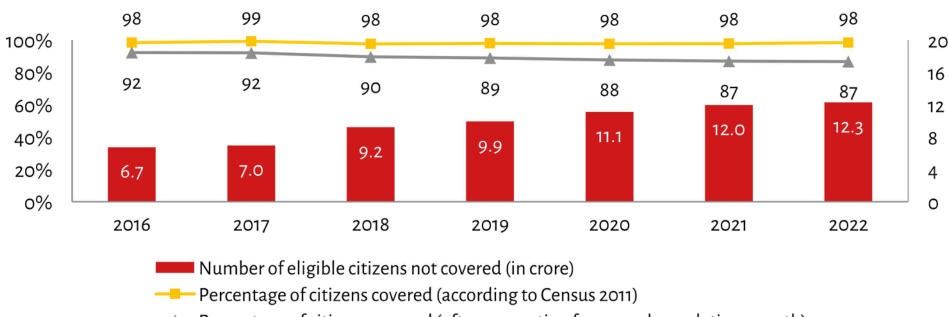

| Year | Number of eligible citizens not covered (in crore) | Percentage of citizens covered (according to Census 2011) | | :--- | :---: | :---: | | 2016 | 6.7 | 98% | | 2017 | 7.0 | 99% | | 2018 | 9.2 | 98% | | 2019 | 9.9 | 98% | | 2020 | 11.1 | 98% | | 2021 | 12.0 | 98% | | 2022 | 12.3 | 98% |
